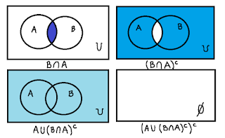
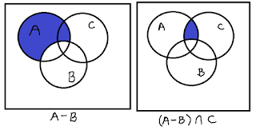
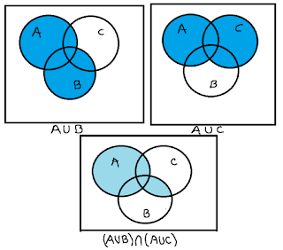
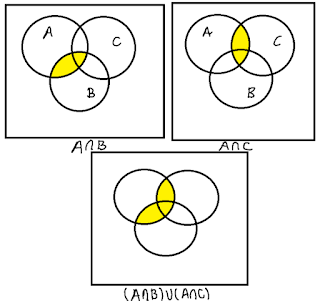
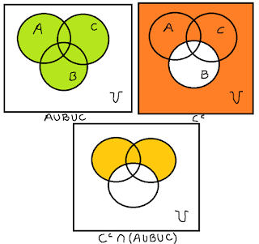

Sean \(U=\{0,1,2,4,6,8,9\}\), \(A=\{0,6,2\}\), \(B=\{2,4,8\}\) y \(C=\{1,6,9\}\). Determine el resultado
y dibuja el diagrama de Venn para cada una de las siguientes operaciones:
- \((A\cup(B\cap A)^{c})^{c}\)
- \((A-B)\cap C\)
- \((A\cup B)\cap (A\cup C)\)
- \((A\cap B)\cup (A\cap C)\)
- \(C^{c}\cap (A\cup B\cup C)\)
P1.1
Comenzamos calculando \(B\cap A\), es decir, el conjunto de los elementos que tienen en común \(A\)
y \(B\):
$$(B\cap A)=\{2\}$$ Luego, calculamos el complemento de este conjunto, i.e.
$$(B\cap A)^{c}=U-(B\cap A)=\{0,1,4,6,8,9\}$$
Hacemos la unión entre el conjunto anterior y \(A\):
$$(A\cup (B\cap A)^{c})=\{0,1,2,4,6,8,9\}$$
Finalmente tendremos que \((A\cup (B\cap A)^{c})^{c}=\emptyset\).

P1.2
Resolvemos la diferencia de conjuntos, es decir, los elementos de \(A\) que no están en \(B\):
$$(A-B)=\{0,6\}$$
Luego hacemos la intersección con el conjunto \(C\), teniendo que
$$(A-B)\cap C=\{6\}$$

P1.3
Calculando primero ambas uniones, se tiene que:
$$A\cup B=\{0,2,4,6,8\}$$
$$A\cup C=\{0,1,2,6,9\}$$
Finalmente, calculamos la intersección entre estos dos conjuntos.
$$(A\cup B)\cap (A\cup C)=\{0,2,6\}$$

P1.4
Calculando las intersecciones, tendremos
$$A\cap B=\{2\}$$
$$A\cap C=\{6\}$$
Luego la unión entre ambos conjuntos obteniéndose que
$$(A\cap B)\cup (A\cap C)=\{2,6\}$$

P1.5
Desarrollando tendremos lo siguiente:
$$\{0,2,4,8\}\cap (\{0,1,2,4,6,8,9\}=\{0,2,4,8\}=C^{c}$$
